我们定义开[2]连续域上n个变量u1，u2，…，un的函数，这里连续域可以是整个n维流形（但排除连续域的边界，如同早前定义单变量函数的方式）．之前我们定义函数的取值在-∞到∞或在a和b之间，但对于函数在这样选择的边界上是否有意义却未作明确规定[3]．
如果有且仅有一个函数x的值，对应每个值系（u1，u2，…，un），那么我们称其为变量u1，u2，…，un[4]的唯一函数．然而，仅用这种定义还不完善；引进“连续”概念后，将极大地丰富我们的分析．以常用的方式定义如下连续的概念：变量为（u1，u2，…，un）的函数x在点[5]a=（a1，…，an）的邻域[6]内连续，如果给定任意小的正量ε，总可以确定一个δ，使得当|uλ-aλ|
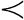
δ（λ=1，2，…，n）有|x-b|ε，其中b指函数x在a1，…，an处的值．我们也可以这样刻画连续：函数x在a的邻域内连续，如果对于任意给定的ε，可以确定一个以a点为中心，半径为ρ的区域，使得当
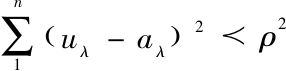
，则有|x-b|ε．上述两种定义相互等价．
最后，正确理解“无穷小”[7]的概念，就可以定义函数在a点邻域内的连续：对于自变量在a的邻域内任意小的变化，相应地，函数值也有任意小的变化．如果我们仅应用此定义于函数首先[8]被定义的点（u1，u2，…，un）处，那就不难将这个定义扩展到函数在连续域的某些点处没有定义的情形．
从函数的连续性定义延伸到另一个作为其结果的概念——“一致连续”[9]的概念，此概念在过去往往被忽视．我们称一个函数在某个确定区间[10]a，…，b上一致连续，是指给定任意小的正量ε，能够确定一个正量δ，使得下列条件成立：对于在区间a，…，b内任意多的值对u，u′：当|u′-u|δ时，则有|f（u′）-f（u）|ε．
于是[11]，如我们上述所说，一致连续是连续的结果，我们将对单变量函数给出证明，单变量函数[12]的情形能够应用于多变量函数，没有本质不同[13]（此证明是以我们此前已全面建立的流形理论的基本命题为基础[14]的）．
证明：划分一个奇[15]流形（当分配[16]所有从-∞到∞的值到变量u时首先会出现）为区间，在选择某个正数n后，允许存在一个量μ，取遍所有正、负整数．由此构造区间：
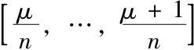
（μ=0，±1，±2，…，±∞）．[17]所有u的值包含在某个这样的区间[18]中，并且只要
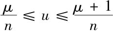
，u就一定在区间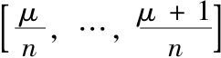
内．现在对n，μ赋值，使得由n，μ定义的区间包含了在其上函数有定义的u值．对于包含在该区间内的f（u）的值，一定存在上、下限g，g′，使得g-g′表示这个区间内函数值的最大变差[19].因此，|f（u′）-f（u″）||g-g′|，其中u′，u″是这些给定区间内任意变量值，且|f（u′）-f（u″）|为正的变量，当u′，u″位于，其上限为g-g′．现在考虑全部[20]区间（μ=0，±1，±2，…，±∞），我们仅保留那些函数在其上如此[21]定义的区间．想象对于每一个这样的区间，都确定区间内值的最大变化（量），然后我们选择这些变化的最大值，设为gn.显然gn依赖于n的取值[22]（在区间中可能存在许多μ使变差达到最大值gn，但这并不重要）．
对于n来说可以取无穷多值，因此存在无穷多个这样的区间．为了认识这一点，例如，若用n表示每一个素数的值，那么每个区间只出现一次．由于素数无穷多，则存在上述定义的无穷多个区间．现在由点
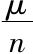
完全确定这样一个区间，并根据我们的重要理论的基本引理[23]，至少存在一点，在其邻域内聚集着任意多个这样定义的点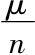
[24].如果存在许多这样的点，则我们从中选取一点u0．然后选择一个任意小的量ε，因为所选择的函数在u0邻域内稳定变化，[25]那么能够确定一个量δ，使得当|u-u0|δ时，有|fu-f(u0)|ε．现在若考虑区间[u0-δ，…，u0+δ]，那么在每个u0的邻域内，分布无穷多个点．由此我们能够找到及
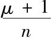
，使得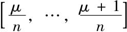
全部位于区间[u0-δ，…，u0+δ]内，为了达到这一点，显然我们只需要选择一个足够大的n，而在区间内两个自变量（其中之一为u0）的差一定小于δ；由于满足上述[26]条件，因此有|fu-f（u0）|ε.接下来，若u′，u″为在区间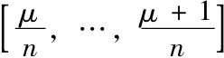
上产生fu的最小和最大值的自变量值，那么有|f（u′）-f（u″）|2ε，从而有gn2ε.由于在每个给定区间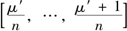
上函数值的最大改变量小于或等于gn，那么此区间内的任意两个自变量的函数值之差小于量2ε，ε本身可以任意小．性质由此得证；可以划分变量u的区域[27]为区间，使得每一个区间内，任意两个函数值之差小于给定的任意小的量．
于是，给定|u′-u″|δ，为了使|f（u′）-f（u″）|ε，只需选择一个n，使得gn
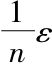
，那么δ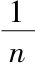
满足我们的条件．即便u′，u″位于两个相邻区间（另一种情形是u′，u″不位于同一区间，二者必居其一，因为总会有|u′-u″|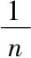
），那么仍将有|f（u′）-f（u″）|2ε，2ε当然可以和ε一样任意小．至此，性质完全被证明；一致连续能够作为连续的结果导出．[28]这条性质的重要性首先在于，对于任意连续性被证明的特殊函数，一致连续的证明就已经完成了[29]——许多特殊情形的证明也许会繁琐些．
1886年6月26日 星期六
现在我们从单变量函数命题的证明扩展到任意多个变量函数的证明上来．
令f（u1，…，un）为n个变量(u1，…，un)的唯一函数[30]，定义在一个闭或开连续统[31]上，且在所定义的区域[32]内连续，这样，我们的任务是从这个函数在区域内的连续性证明其一致连续．
称函数f(u1，…，un)一致连续是，当给定任意小的量ε，总可能确定另一个量δ，使得当|u′λ-u″λ|δ（λ=1，2，…，n），则有|f（u′1，…，u′n）-f（u″1，…，u″n）|ε，对两点u成立（当然上述不等式仅在函数有定义的区域内成立）．现在，对比单变量函数的证明来证明n变量函数的命题．
证明：称所有点(u1，…，un)，aλ≤uλ≤aλ+dλ（λ=1，2，…，n）（其中dλ是给定的正量）的全体为变量（u1，…，un）的已知区域，此区域表示为：
[a1，…，a1+d1，a2，…，a2+d2，…，an，…，an+dn]，
考虑区域
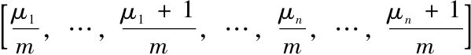
，其中μλ能够取遍所有可能的正、负整数且m为固定的正数．这样，每一点（u1，u2，…，un）将唯一属于这些区域之一，它们全体构成n维流形，因为dλ有相同的值，即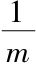
，对于所有的λ能够通过特殊的数μλ（λ=1，2，…，n）来刻画区域．若有两点（u′1，u′2，…，u′n）和（u″1，u″2，…，u″n）位于这些区间之一内，那么对于每个|（fu′1，u′2，…，u′n）-f（u″1，u″2，…，u″n）|，存在一个上限为g的变量，在所有被考虑的区间内具有一个确定的值[33]．想象那些函数首先[34]被定义的区间；其个数为无限多，因为函数在无限连续统上定义．对于每一个这样的区间，存在上述所给差的绝对值的上限[35]，（在这些区间中）存在一个或多个使函数差值达到最大[36]的点．若
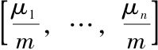
[37]为这些区域之一，其中g达到最大值．显然若允许其像已知的那样变化，固定m，将得到无穷多个这样的区间．这样至少存在一点（a1，a2，…，an），在此点的每个邻域内将出现无穷多个被定义的点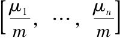
[38]．若从中任取一点（a1，a2，…，an），根据连续的假设，可以确定一个量δ，使得当（u′1，u′2，…，u′n）和（u″1，u″2，…，u″n）包含在区间［a1-δ，…，a1+δ，…，an-δ，…，an+δ］中，有|f（u′1，u′2，…，u′n）-f（u″1，u″2，…，u″n）|ε．
进一步，选择m，可以确定（a1，a2，…，an）的意义，使得区域
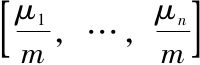
完全位于[a1-δ，…，a1+δ，…，an-δ，…，an+δ]内，因为我们只需要首先确定商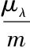
，使得aλ如期望的那样接近这些商．通过适当放大m，可以令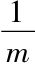
和δ一样小，而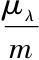
和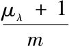
都位于[aλ-δ，…，aλ+δ]内．将上述不等式[39]应用到所有点（u′1，u′2，…，u′n）和（u″1，u″2，…，u″n），这些点包含在区域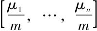
内，则gε是在此区域内函数值的最大差，在其余的每个区间内，差≤g，则a一定ε．因而，我们已将函数在其上定义的整个连续域划分为许多部分区域，使得在每一个部分区域内，函数值的最大变化小于任意小的、给定的量ε．
现在，任意选择一点（a′1，a′2），…，a′n），在这一点上函数有定义，以此点为心划定一个区域［a′1-d′1，…，a′n+d″1，…，a′n-d′n，…，a′n+d″n］，使得对此区域内所有的点来说，两函数值的差ε；为了做到这一点，首先需要选择一个足够大的m，使得在区域的所有部分内，函数值的最大变差
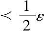
．根据上面所述，总可以做到这一点．如果选择点（a′1，a′2，…，a′n）所位于的那部分区域，且选择δ′λ，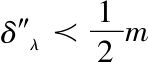
，则要么所有［a′1-d′1，…，a′n+d″1，…，a′n-d′n，…，a′n+d″n］属于同一个部分区域，即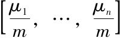
，要么同时属于这个区域及3n-1个邻域的2n-1个部分[40].前一种情形中，区间[a′1-d′1，…，a′n+d″1，…，a′n-d′n，…，a′n+d″n]上任意两个函数值的第二个差不仅小于ε，而且小于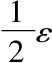
；后一种情形中，两自变量值显然属于2n个部分的两个不同区域，它小于ε．相应地，以定义函数的连续域的每个点为心，都可以定义一个区域，使得其中的函数最大变化值任意小．因此，这一部分开篇提出的命题得证，的确，再次强调一下，一致连续已作为连续的结果而导出．[41]
例：当n=2（偶），3n-1=8，2n-1=3．
（潘丽云 译 李文林 校）
[1]英译本由John Anders翻译．
[2]“unabgeschlossen”译作“开的”，字面意思是“非闭”．以前的版本（这里未出版），魏尔斯特拉斯在下面的讨论中定义“开连续”：如果（一个流形的）边界点完全包含在点的闭集合内，那么每个不包含在这个点集中的点包含在连续内（或，如果流形划分为若干个连续通过【确定】点集，那么（每个不包含在给定点集的点）包含在这些连续【之一内】），我们称这样一个连续为“开连续”．
[3]不包括之前的部分．
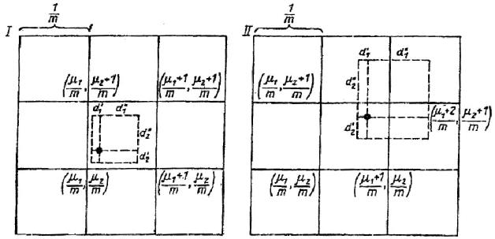
[4]（u1，u2，…，un）为给定值，相应的变量为u1，u2，…，un，n个函数；魏尔斯特拉斯称此函数为x，是在同样的表达中定义相同的函数，与现今的表达相反，魏尔斯特拉斯使用“x”表示因变量（也就是我们常说的f（x）或y），使用“u”表示自变量（即我们今天使用的x）．
[5]此处及下文的“Punkte”和“Stelle”均译作“点”，此处魏尔斯特拉斯使用“Stelle”．
[6]此处及下文的“Nähe”译作“邻域”．
[7]此处魏尔斯特拉斯一语双关地使用了“endlich”（最后，终于）和“unendlich”（无限，无尽头）．
[8]“überhaupt”译作“首先”．
[9]“gleichmässigen Stetigkeit”字面意思是“相同测度的连续”，“一致连续”是现代英语表达．然而，魏尔斯特拉斯的术语比我们如今使用的更具描述性．“一致的”连续与ε和δ确定或衡量的完全一致．参见魏尔斯特拉斯下面的定义．
[10]后文将对“Intervals”详述，我使用方括号对应于魏尔斯特拉斯的圆括号，他为了更清晰地表示闭区间．他在讲课过程中，始终这样使用．
[11]“Überhaupt”译作“如此”或者也可以说“一般的”，魏尔斯特拉斯并未强调这样的事实：在给定函数的给定区间上，虽然函数的一致连续包含着连续，一般情况下，连续并不一定一致连续（函数在区间上连续但不一定一致连续的经典例子就是函数f（x）=x-1在区间（0，1））事实上他在此处和其他一些地方的措辞会引起误导，使人认为相反的命题一般是成立的，而这是错误的．诚然，许多特殊情形中，连续蕴含了一致连续，并且魏尔斯特拉斯确实处理了这样一个特例（见下面的脚注）．
[12]注意到，魏尔斯特拉斯从n变量函数的连续转变到单变量的一致连续．此处暗含了魏尔斯特拉斯后来关于n变量函数一致连续的表述．就在下面的证明中，魏尔斯特拉斯处理的是单变量函数．
[13]这是魏尔斯特拉斯在下面第二部分所做的工作（1866年发表）．
[14]同样这些早先部分并不包含在内．这里魏尔斯特拉斯似乎是指我们现今所谓的波尔查诺-魏尔斯特拉斯聚点定理．
[15]Einfache．
[16]“teilen”和“zuteilen”两个词之间的关联无法用英语表达出来．
[17]同脚注9，我改变了魏尔斯特拉斯的记法：他使用圆括号的地方我用了方括号，以表示区间是闭的，非开的．魏尔斯特拉斯使用的是闭区间是关键的一点．这也是从连续导出一致连续必须成立的一个条件．
[18]这是正确的，因为区间取遍所有的实数．
[19]事实上，魏尔斯特拉斯假设，函数在给定区间上存在上、下极限这一条件，是他证明连续推出一致连续一定成立的．没有这一假设（即一般情况），连续并不一定包含一致连续，一般来讲，一致连续是强条件．
[20]此处及下文的“Gesamtheit”译作“全部”．
[21]“Überhaupt”译作“如此，这样”．
[22]因为区间包含最大变化值，即gn，一般说来，此值取决于划分区间的精细度，反之，依赖n的取值．
[23]同样地，此处并不包含在内．
[24]现今我们称之为波尔查诺-魏尔斯特拉斯定理．其现代表述为：实线上每一个有界无限点集具有一个聚点．
[25]也就是说，假设函数连续，见上述连续的定义．
[26]即，若|u′-u|δ，那么有|f（u′）-f（u）|ε．
[27]此处及下文的“Bereich”译作“区域”．
[28]“Überhaupt”译作“同样地”．
[29]“Überhoben”字面意思为“攻克”当然，如上述所说，连续隐含着一致连续仅对特定函数的特定区间成立，也就是说，并不是一般成立．
[30]此术语在本节的首页介绍过．
[31]对于术语“闭连续”和“开连续”，见脚注1中魏尔斯特拉斯的定义．
[32]此处及下文的“Gebiete”译作“区域”．
[33]这是魏尔斯特拉斯从连续中证明一致连续非常关键的假设，对比脚注18．
[34]Überhaupt译作“首先”．
[35]即|f（u′1，u′2，…，u′n-fu″1，u″2，…，u″n）|在每一对点处．
[36]也就是说，或者最大值g出现在某一区间中（其余的区间具有稍小一些的g），或者最大值g出现在几个区间中（恰好共同具有g）．
[37]作者的注释：从现在起我们将用更简洁地指代上述基本区域的部分．
[38]从魏尔斯特拉斯的聚点定理得出，见脚注23．
[39]即|f（u′1，u′2，…，u′n）-f（u″1，u″2，…，u″n）|ε．
[40]见魏尔斯特拉斯的图表．
[41]Überhaupt．